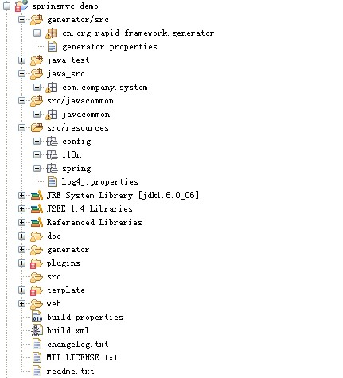

导航菜单
IDE配置
- 创建一个eclipse web项目
- 修改eclipse项目属性将整个项目修改为"UTF-8"编码
- 将rapid-framework解压出来的整个目录拷贝至项目根目录
生成器配置运行
- 修改eclipse项目属性将整个项目修改为"UTF-8"编码
- 将src/javacommon,src/resources,generator/src加入源代码路径
- 将generator/lib目录下的文件加入classpath,如果没有你的数据库驱动,请自己添加
- 修改代码生成器的配置文件generator/src/generator.properties
- 以application方式运行generator.GeneratorMain类,运行时直接修改main()方法添加相关表
- 生成的文件在$outRoot(默认为:d/webapp-generator-output)目录,再根据所需手工拷回至工作目录
系统搭建相关配置文件修改 - 加(*)号为默认值如果满足则无需修改
1.插件安装
通过ant来安装插件,ant脚本文件:plugins/build.xml (注:通过eclipse打开文件,再打开outline视图,右键点击target即可运行ant任务)
任务介绍:
install_plugin : 弹出对话框根据"插件名称"安装插件.可以安装任何插件
install_xxxxxx : 内置的几个名称用于快速插件安装,避免需要手工输入插件名称.
如需要安装struts2与hibernate插件,直接运行install_struts2+hibernate target即可
(注:插件安装完可以将所有插件删除,直接删除plugins目录即可)
2.修改 数据库连接属性
src/resources/config/jdbc.properties
该properties文件通过spring applicationContext-resource.xml加载,数据源就是在这个xml文件里面定义
3.修改 spring 配置文件
service配置文件: src/resource/spring/applicationContext-service.xml
(*)修改context:component-scan节点属性,默认加载com.**.service
resource配置文件: src/resource/spring/applicationContext-resource.xml
(*)修改数据库事务配置aop:config定义的pointcut,默认为pointcut="execution(* com.**.service.*Manager.*(..))"
4.dao 配置相关修改,三选一
hibernate dao
1.修改配置文件: src/resource/spring/applicationContext-dao.xml
1.1修改sessionFactory.hibernateProperties的数据库方言(Dialect)属性,默认为MysqlDialect
(*)1.2修改sessionFactory的packagesToScan以确定要加载的@Entity类,默认加载com.**.model
(*)1.3修改context:component-scan节点属性以确定要加载的dao,默认加载com.**.dao
2.主键生成策略修改:简单主键修改generator.properties的hibernate_id_generator即可,复杂主键如sequence请直接修改${className}.java,默认为increment
ibatis dao
1.修改代码生成器模板${className}SqlMap.xml的<select id="pageSelect">节点,以支持分页查询使用不同的数据库物理分页,默认为Mysql
2.修改配置文件: src/resource/spring/applicationContext-dao.xml
(*)2.1修改sqlMapClient的mappingLocations以确定要加载的SqlMap.xml,默认值为:classpath*:/com/**/model/**/*SqlMap.xml
(*)2.2修改context:component-scan节点属性以确定要加载的dao,默认加载com.**.dao
3.主键生成策略修改,修改${className}SqlMap.xml中的<selectKey>节点,默认是使用mysql 的auto_increment
spring jdbc dao
1.修改配置文件: src/resource/spring/applicationContext-dao.xml
1.1修改dialect,以支持不同的数据库分页查询. 默认值为:MySQLDialect
(*)1.2修改context:component-scan节点属性以确定要加载的dao,默认加载com.**.dao
2.主键生成策略修改
2.1修改模板${className}Dao.java中的save()方法; 默认适用mysql auto_increment及sqlserver identity
2.2其它生成策略为
sqlserver identity: insertWithIdentity(entity,sql);
oracle sequence: insertWithOracleSequence(entity,sequenceName,insertSql);
db2 sequence: insertWithDB2Sequence(entity,sequenceName,insertSql);
uuid: insertWithUUID(entity,insertSql);
手工分配: insertWithAssigned(entity,insertSql)
5.WebFramework 配置文件修改,三选一
URL规则统一为: /subpackage/Entity/method.do, 如/system/User/list.do
strust
配置文件web/WEB-INF/struts-config.xml
根据你的包结构修改struts的通配符配置
struts2
配置文件src/resources/struts.xml
修改说明:
1.修改pakcage的namespace属性,因为URL访问规则是: /namesapce/Entity/method.do
2.根据你的包结构修改action节点的class属性
spring mvc
配置文件:web/WEB-INF/springmvc-servlet.xml
修改说明:
1.修改class=ControllerClassNameHandlerMapping节点的pathPrefix以确定URL生成的前缀,URL规则为/pathPrefix/Entity/method.do,类似struts2的nemespace
(*)2.修改context:component-scan以确定要加载的controller,默认为com.**.controller
正确的项目目录配置示例

模板相关
模板特性
特性1: 模板文件的的名称与目录名称可以直接引用相关变量,如${className}.java
特性2: .include结尾的模板文件会被无条件忽略,不会生成文件,一般用于其它文件包含
特性3: 以@testExpression结尾的模板文件为有条件忽略,如果testExpression的值在数据模型为true,
则生成该文件,生成的文件不会包含@testExpression,反之
如${className}Id.java@compositeId
特性4: 支持插入操作,如模板输出生成的地方已经有该同名的文件存在,
并且文件中有包含"webapp-generator-insert-location"标记,
则模板生成的内容会插入在该标记之后
该特性对如生成的spring配置内容插入spring配置文件十分有用
主要相关模板讲解
custom.include: 包含一些变量的配置
macro.include: 包含一些公用的FreeMarker macro
相关文件及目录介绍
doc
--guide.html 系统搭建及代码生成器使用说明
generator 代码生成器的目录
plugins 项目的相关插件目录
--build.xml 项目的插件安装脚本
template 存放代码生成器的模板文件
web web内容目录
src java源代码目录